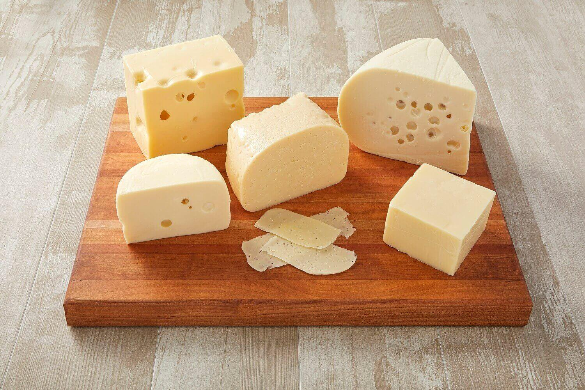
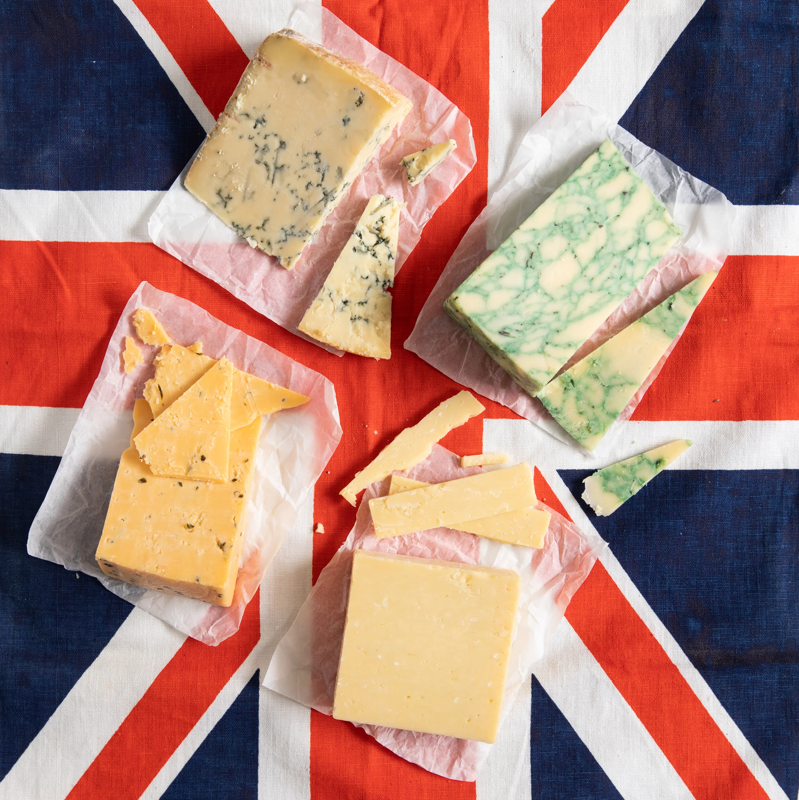
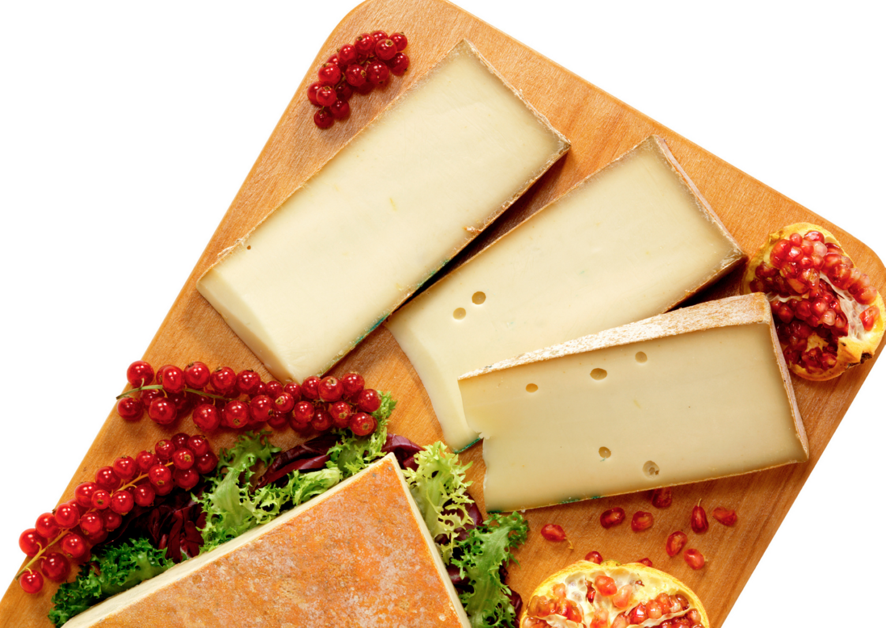
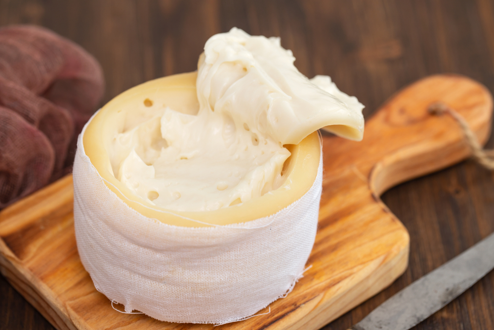
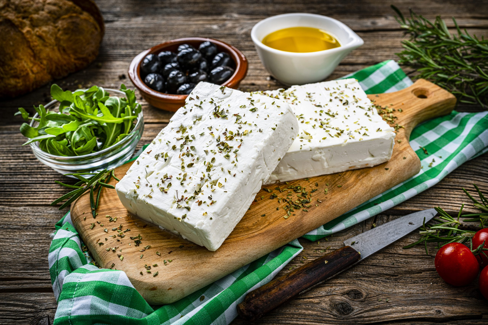
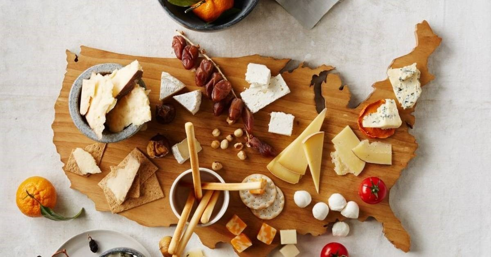
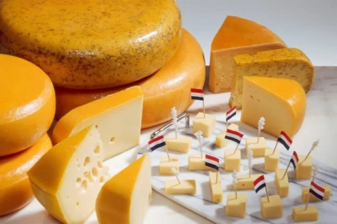
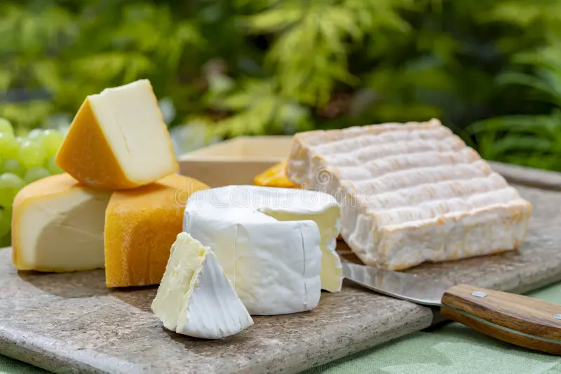

- Soft Cheeses (Fromages à pâte molle)
- Washed-Rind Cheeses (Croûte lavée)
- Blue cheese Fromages à pâte persillée)
- Goat cheese (Fromages de chèvre)
French cheese began thousands of years ago, with early methods developed by farmers and later improved by monks. Over time, regions across France created unique cheeses, now protected by rules to preserve their traditional styles.

- Emmental
- Gruyère
- Raclette
- Sbrinz
Swiss cheese began centuries ago when Alpine farmers made cheese to preserve milk for winter. They later created famous types like Emmental and Gruyère, known for their distinct flavors and holes.

- Cheddar
- Cheshire
- Blue Vinny
- Stilton

- Parmigiano Reggiano
- Mozzarella
- Burrata
- Ricotta
Italian cheese has been made for thousands of years, starting with the ancient Romans, who used simple methods to turn milk into cheese. Over time, each region of Italy developed its own special types of cheese, using local ingredients and traditions.

- Queijo da Serra
- Requeijão
- Queijo São Jorge
Cheese-making in Portugal dates back to ancient times, with each region creating its own unique cheeses using local milk and traditional methods. These cheeses have become an important part of Portuguese culture and cuisine.

- feta
- Graviera
- Manouri
Cheese-making in Greece began thousands of years ago, even mentioned in ancient myths. Each region developed its own styles, with feta being the most famous Greek cheese.

- American Cheese
- Monterey Jack
- Pepper Jack
- Brick Cheese
Cheese-making in the USA began with European settlers who brought their techniques with them. Over time, the U.S. developed its own styles, like American cheese, using modern methods and large-scale production.

- Gouda
- Edam
- Rookkaas (aged gouda)
Cheese-making in the Netherlands has been important since ancient times, with evidence dating back to 800 B.C. The Dutch became famous for cheeses like Gouda and Edam, made using traditional methods.

- Passendale
- Patachou
- Herve
- Maasdam
Cheese-making in Belgium has roots in medieval monasteries, where monks crafted unique cheeses using local ingredients. Today, Belgium is known for a wide variety of artisanal cheeses with rich flavors.